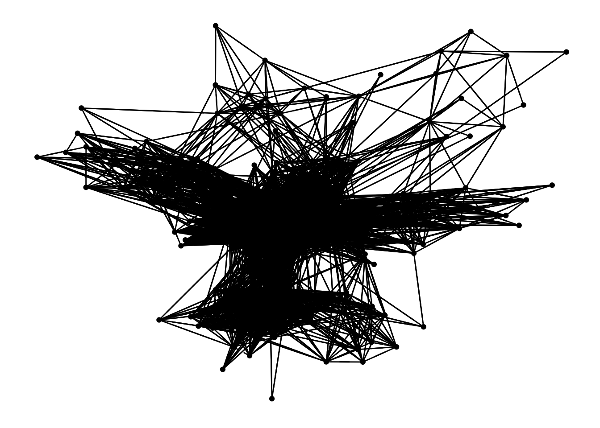
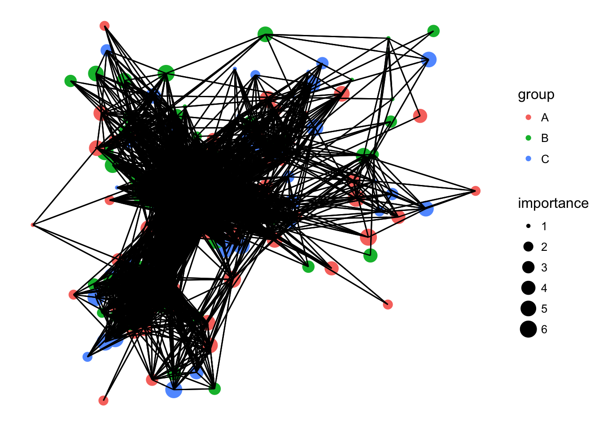
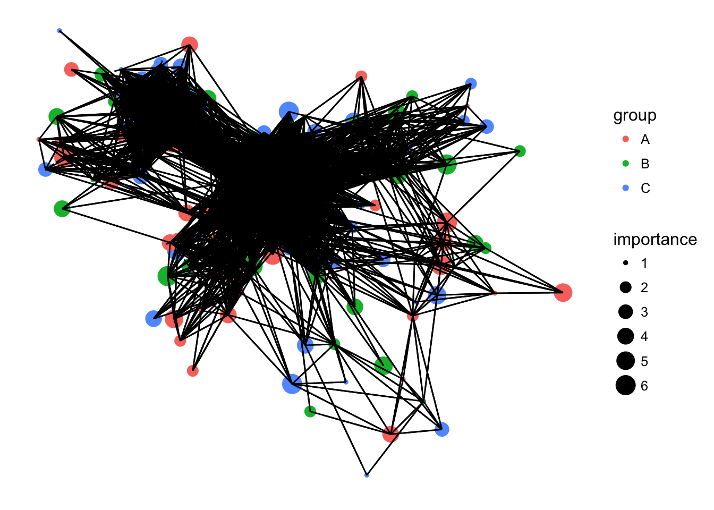
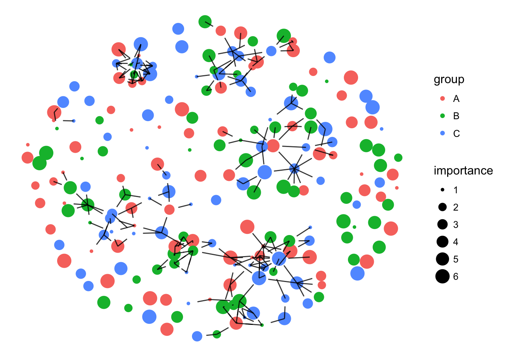
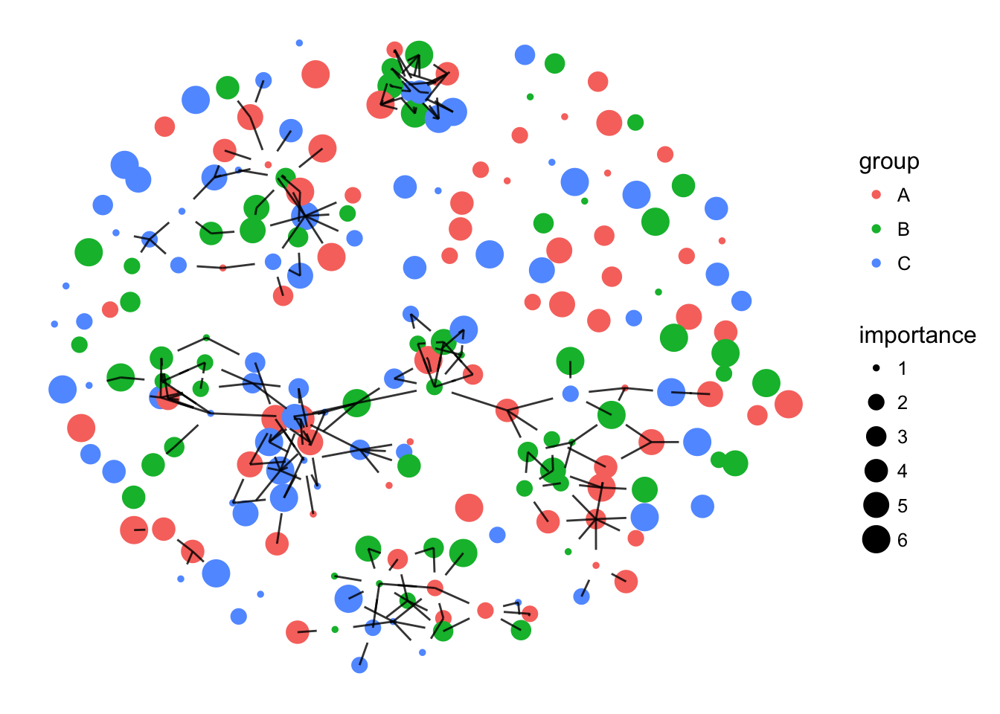

transition = read.table(url('https://raw.githubusercontent.com/MingChen0919/gst-colloquium-workshop-2018/master/content/datasets-2/John_datasets/transitionmatrix.dat'))library(ggnetwork)
library(sna)n = network(transition)
n1 = ggnetwork(n)
n1$x = n1$x[, 1]
n1$y = n1$y[, 1]
n1$xend = n1$xend[, 1]
n1$yend = n1$yend[, 1]
ggplot(n1, aes(x = x, y = y, xend = xend, yend = yend)) +
geom_nodes() +
geom_edges() +
theme_blank()
Assign an importance level to each vertex
n %v% "importance" = sample(1:6, nrow(transition), replace = TRUE)Assign group to vertex
n %v% "group" = sample(c("A", "B", "C"), nrow(transition), replace = TRUE)Visualize group and importance informaction.
n2 = ggnetwork(n)
n2$x = n2$x[, 1]
n2$y = n2$y[, 1]
n2$xend = n2$xend[, 1]
n2$yend = n2$yend[, 1]
ggplot(n2, mapping = aes(x = x, y = y, xend = xend, yend = yend)) +
geom_nodes(mapping = aes(color = group, size = importance)) +
geom_edges() +
theme_blank()
Edge transprancy
ggplot(n2, mapping = aes(x = x, y = y, xend = xend, yend = yend)) +
geom_nodes(mapping = aes(color = group, size = importance)) +
geom_edges(alpha = 0.05) +
theme_blank()
Threshold for edge display
threshold = 0.1
transition2 = transition
transition2[transition2 < 0.1] = 0
n = network(transition2)
n %v% "importance" = sample(1:6, nrow(transition), replace = TRUE)
n %v% "group" = sample(c("A", "B", "C"), nrow(transition), replace = TRUE)
n1 = ggnetwork(n)
n1$x = n1$x[, 1]
n1$y = n1$y[, 1]
n1$xend = n1$xend[, 1]
n1$yend = n1$yend[, 1]
ggplot(n1, mapping = aes(x = x, y = y, xend = xend, yend = yend)) +
geom_nodes(mapping = aes(color = group, size = importance)) +
geom_edges(alpha = 0.8) +
theme_blank()
ggplot(n1, mapping = aes(x = x, y = y, xend = xend, yend = yend)) +
geom_edges(alpha = 0.8) +
geom_nodelabel(aes(label = vertex.names, color = as.factor(importance)),
cex = 2,
fontface = "bold") +
scale_color_manual(name = "Importance", values = colorRampPalette(c("yellow", "red"))(6)) +
theme_blank()